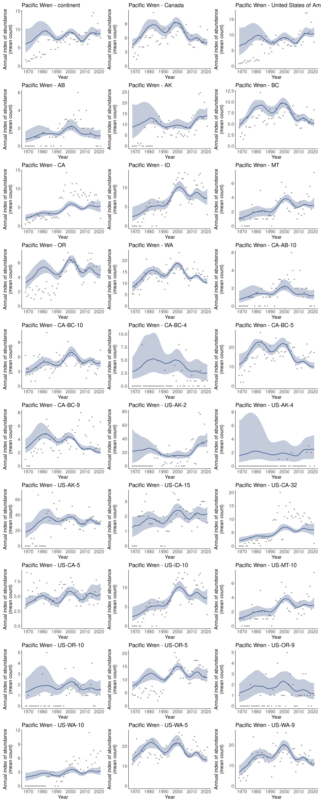

Data prep
Stratify
s <- stratify(by = "bbs_cws", sample = TRUE)
#> Using 'bbs_cws' (standard) stratification
#> Using sample BBS data...
#> Using species Pacific Wren (sample data)
#> Stratifying data...
#> Combining BCR 7 and NS and PEI...
#> Renaming routes...Prepare counts
p <- prepare_data(s, min_max_route_years = 2)Prepare spatial

n <- prepare_spatial(map, p)
#> Preparing spatial data...
#> Identifying neighbours (non-Voronoi method)...
#> Formating neighbourhood matrices...
#> Plotting neighbourhood matrices...Run model
m <- run_model(prepped_data = p,
model = "gam",
model_variant = "spatial",
spatial_data = n,
iter_sampling = 10, iter_warmup = 10, chains = 2)
#> Compiling Stan program...
#>
-
\
|
/
-
\
|
/
-
\
|
/
-
\
|
/
-
\
|
/
-
\
|
/
-
\
|
/
-
\
|
/
-
\
|
/
-
\
|
/
-
\
|
/
-
\
|
/
-
\
|
/
-
\
|
/
-
\
|
/
-
\
|
/
-
\
|
/
-
\
|
/
-
\
|
/
-
\
|
/
-
\
|
/
-
\
|
/
-
\
|
/
-
\
|
/
-
\
|
/
Running MCMC with 2 chains, at most 4 in parallel...
#>
#> Chain 1 WARNING: No variance estimation is
#> Chain 1 performed for num_warmup < 20
#> Chain 1 Iteration: 1 / 20 [ 5%] (Warmup)
#> Chain 1 Informational Message: The current Metropolis proposal is about to be rejected because of the following issue:
#> Chain 1 Exception: neg_binomial_2_log_lpmf: Precision parameter is 0, but must be positive finite! (in '/tmp/RtmpFromXy/model-f841294c6671.stan', line 230, column 3 to column 40)
#> Chain 1 If this warning occurs sporadically, such as for highly constrained variable types like covariance matrices, then the sampler is fine,
#> Chain 1 but if this warning occurs often then your model may be either severely ill-conditioned or misspecified.
#> Chain 1
#> Chain 1 Informational Message: The current Metropolis proposal is about to be rejected because of the following issue:
#> Chain 1 Exception: neg_binomial_2_log_lpmf: Precision parameter is 0, but must be positive finite! (in '/tmp/RtmpFromXy/model-f841294c6671.stan', line 230, column 3 to column 40)
#> Chain 1 If this warning occurs sporadically, such as for highly constrained variable types like covariance matrices, then the sampler is fine,
#> Chain 1 but if this warning occurs often then your model may be either severely ill-conditioned or misspecified.
#> Chain 1
#> Chain 1 Informational Message: The current Metropolis proposal is about to be rejected because of the following issue:
#> Chain 1 Exception: neg_binomial_2_log_lpmf: Precision parameter is 0, but must be positive finite! (in '/tmp/RtmpFromXy/model-f841294c6671.stan', line 230, column 3 to column 40)
#> Chain 1 If this warning occurs sporadically, such as for highly constrained variable types like covariance matrices, then the sampler is fine,
#> Chain 1 but if this warning occurs often then your model may be either severely ill-conditioned or misspecified.
#> Chain 1
#> Chain 1 Informational Message: The current Metropolis proposal is about to be rejected because of the following issue:
#> Chain 1 Exception: neg_binomial_2_log_lpmf: Precision parameter is 0, but must be positive finite! (in '/tmp/RtmpFromXy/model-f841294c6671.stan', line 230, column 3 to column 40)
#> Chain 1 If this warning occurs sporadically, such as for highly constrained variable types like covariance matrices, then the sampler is fine,
#> Chain 1 but if this warning occurs often then your model may be either severely ill-conditioned or misspecified.
#> Chain 1
#> Chain 1 Informational Message: The current Metropolis proposal is about to be rejected because of the following issue:
#> Chain 1 Exception: neg_binomial_2_log_lpmf: Precision parameter is 0, but must be positive finite! (in '/tmp/RtmpFromXy/model-f841294c6671.stan', line 230, column 3 to column 40)
#> Chain 1 If this warning occurs sporadically, such as for highly constrained variable types like covariance matrices, then the sampler is fine,
#> Chain 1 but if this warning occurs often then your model may be either severely ill-conditioned or misspecified.
#> Chain 1
#> Chain 2 WARNING: No variance estimation is
#> Chain 2 performed for num_warmup < 20
#> Chain 2 Iteration: 1 / 20 [ 5%] (Warmup)
#> Chain 2 Informational Message: The current Metropolis proposal is about to be rejected because of the following issue:
#> Chain 2 Exception: neg_binomial_2_log_lpmf: Precision parameter is 0, but must be positive finite! (in '/tmp/RtmpFromXy/model-f841294c6671.stan', line 230, column 3 to column 40)
#> Chain 2 If this warning occurs sporadically, such as for highly constrained variable types like covariance matrices, then the sampler is fine,
#> Chain 2 but if this warning occurs often then your model may be either severely ill-conditioned or misspecified.
#> Chain 2
#> Chain 2 Informational Message: The current Metropolis proposal is about to be rejected because of the following issue:
#> Chain 2 Exception: neg_binomial_2_log_lpmf: Precision parameter is 0, but must be positive finite! (in '/tmp/RtmpFromXy/model-f841294c6671.stan', line 230, column 3 to column 40)
#> Chain 2 If this warning occurs sporadically, such as for highly constrained variable types like covariance matrices, then the sampler is fine,
#> Chain 2 but if this warning occurs often then your model may be either severely ill-conditioned or misspecified.
#> Chain 2
#> Chain 2 Informational Message: The current Metropolis proposal is about to be rejected because of the following issue:
#> Chain 2 Exception: neg_binomial_2_log_lpmf: Precision parameter is 0, but must be positive finite! (in '/tmp/RtmpFromXy/model-f841294c6671.stan', line 230, column 3 to column 40)
#> Chain 2 If this warning occurs sporadically, such as for highly constrained variable types like covariance matrices, then the sampler is fine,
#> Chain 2 but if this warning occurs often then your model may be either severely ill-conditioned or misspecified.
#> Chain 2
#> Chain 2 Informational Message: The current Metropolis proposal is about to be rejected because of the following issue:
#> Chain 2 Exception: neg_binomial_2_log_lpmf: Precision parameter is 0, but must be positive finite! (in '/tmp/RtmpFromXy/model-f841294c6671.stan', line 230, column 3 to column 40)
#> Chain 2 If this warning occurs sporadically, such as for highly constrained variable types like covariance matrices, then the sampler is fine,
#> Chain 2 but if this warning occurs often then your model may be either severely ill-conditioned or misspecified.
#> Chain 2
#> Chain 2 Informational Message: The current Metropolis proposal is about to be rejected because of the following issue:
#> Chain 2 Exception: neg_binomial_2_log_lpmf: Precision parameter is 0, but must be positive finite! (in '/tmp/RtmpFromXy/model-f841294c6671.stan', line 230, column 3 to column 40)
#> Chain 2 If this warning occurs sporadically, such as for highly constrained variable types like covariance matrices, then the sampler is fine,
#> Chain 2 but if this warning occurs often then your model may be either severely ill-conditioned or misspecified.
#> Chain 2
#> Chain 2 Iteration: 11 / 20 [ 55%] (Sampling)
#> Chain 1 Iteration: 11 / 20 [ 55%] (Sampling)
#> Chain 2 Iteration: 20 / 20 [100%] (Sampling)
#> Chain 1 Iteration: 20 / 20 [100%] (Sampling)
#> Chain 2 finished in 17.1 seconds.
#> Chain 1 finished in 17.2 seconds.
#>
#> Both chains finished successfully.
#> Mean chain execution time: 17.1 seconds.
#> Total execution time: 17.3 seconds.
#> Saving model output to /home/steffi/Projects/Business/ECCC/bbsBayes/vignettes/articles/BBS_STAN_gam_spatial_2022-12-16_01.rdsExplore results
Convergence
conv <- get_convergence(m)
conv
#> # A tibble: 8,803 × 5
#> variable_type variable rhat ess_bulk ess_tail
#> <chr> <chr> <dbl> <dbl> <dbl>
#> 1 lp__ lp__ 1.48 10 10
#> 2 strata_raw strata_raw[1] 1.27 10 10
#> 3 strata_raw strata_raw[2] 0.990 10 10
#> 4 strata_raw strata_raw[3] 1.13 10 10
#> 5 strata_raw strata_raw[4] 1.09 10 10
#> 6 strata_raw strata_raw[5] 1.15 10 10
#> 7 strata_raw strata_raw[6] 1.00 10 10
#> 8 strata_raw strata_raw[7] 1.18 10 10
#> 9 strata_raw strata_raw[8] 1.45 10 10
#> 10 strata_raw strata_raw[9] 1.29 10 10
#> # … with 8,793 more rowsIndices
i <- generate_indices(model_output = m,
regions = c("continent",
"country",
"prov_state",
"stratum"))
#> Processing region continent
#> Processing region country
#> Processing region prov_state
#> Processing region stratum
p <- plot_indices(i, add_observed_means = TRUE)
patchwork::wrap_plots(p, ncol = 3)


Reproducibility and Clean up
list.files(pattern = "csv|rds")
#> [1] "BBS_STAN_gam_spatial_2022-12-16_01.rds" "BBS_STAN_gam_spatial_2022-12-16-1.csv"
#> [3] "BBS_STAN_gam_spatial_2022-12-16-2.csv"
unlink(list.files(pattern = "csv|rds"))
devtools::session_info()
#> ─ Session info ──────────────────────────────────────────────────────────────────────────────────────
#> setting value
#> version R version 4.2.1 (2022-06-23)
#> os Ubuntu 22.04.1 LTS
#> system x86_64, linux-gnu
#> ui RStudio
#> language en_CA:en
#> collate en_CA.UTF-8
#> ctype en_CA.UTF-8
#> tz America/Winnipeg
#> date 2022-12-16
#> rstudio 2022.12.0+353 Elsbeth Geranium (desktop)
#> pandoc 2.19.2 @ /usr/lib/rstudio/resources/app/bin/quarto/bin/tools/ (via rmarkdown)
#>
#> ─ Packages ──────────────────────────────────────────────────────────────────────────────────────────
#> package * version date (UTC) lib source
#> abind 1.4-5 2016-07-21 [1] CRAN (R 4.2.0)
#> assertthat 0.2.1 2019-03-21 [1] CRAN (R 4.2.0)
#> backports 1.4.1 2021-12-13 [1] CRAN (R 4.2.0)
#> bbsBayes * 3.0.0 2022-12-16 [1] local
#> bit 4.0.4 2020-08-04 [1] CRAN (R 4.2.0)
#> bit64 4.0.5 2020-08-30 [1] CRAN (R 4.2.0)
#> boot 1.3-28 2021-05-03 [4] CRAN (R 4.1.1)
#> bslib 0.3.1 2021-10-06 [1] CRAN (R 4.2.0)
#> cachem 1.0.6 2021-08-19 [1] CRAN (R 4.2.0)
#> callr 3.7.3 2022-11-02 [1] CRAN (R 4.2.1)
#> checkmate 2.1.0 2022-04-21 [1] CRAN (R 4.2.0)
#> class 7.3-20 2022-01-13 [4] CRAN (R 4.1.2)
#> classInt 0.4-3 2020-04-07 [1] CRAN (R 4.2.0)
#> cli 3.4.1 2022-09-23 [1] CRAN (R 4.2.1)
#> clisymbols 1.2.0 2017-05-21 [1] CRAN (R 4.2.1)
#> cmdstanr 0.5.3 2022-08-05 [1] Custom
#> colorspace 2.0-3 2022-02-21 [1] CRAN (R 4.2.0)
#> covr 3.5.1 2020-09-16 [1] CRAN (R 4.2.0)
#> crayon 1.5.2 2022-09-29 [1] CRAN (R 4.2.1)
#> curl 4.3.3 2022-10-06 [1] CRAN (R 4.2.1)
#> cyclocomp 1.1.0 2016-09-10 [1] CRAN (R 4.2.1)
#> data.table 1.14.2 2021-09-27 [1] CRAN (R 4.2.0)
#> DBI 1.1.2 2021-12-20 [1] CRAN (R 4.2.0)
#> deldir 1.0-6 2021-10-23 [1] CRAN (R 4.2.1)
#> desc 1.4.2 2022-09-08 [1] CRAN (R 4.2.1)
#> devtools 2.4.5 2022-10-11 [1] CRAN (R 4.2.1)
#> digest 0.6.30 2022-10-18 [1] CRAN (R 4.2.1)
#> distributional 0.3.0 2022-01-05 [1] CRAN (R 4.2.0)
#> downlit 0.4.0 2021-10-29 [1] CRAN (R 4.2.0)
#> dplyr 1.0.9 2022-04-28 [1] CRAN (R 4.2.0)
#> e1071 1.7-9 2021-09-16 [1] CRAN (R 4.2.0)
#> ellipsis 0.3.2 2021-04-29 [1] CRAN (R 4.2.0)
#> evaluate 0.16 2022-08-09 [1] CRAN (R 4.2.1)
#> fansi 1.0.3 2022-03-24 [1] CRAN (R 4.2.0)
#> farver 2.1.1 2022-07-06 [1] CRAN (R 4.2.1)
#> fastmap 1.1.0 2021-01-25 [1] CRAN (R 4.2.0)
#> fs 1.5.2 2021-12-08 [1] CRAN (R 4.2.0)
#> generics 0.1.3 2022-07-05 [1] CRAN (R 4.2.1)
#> geofacet 0.2.0 2020-05-26 [1] CRAN (R 4.2.1)
#> geogrid 0.1.1 2018-12-11 [1] CRAN (R 4.2.0)
#> ggplot2 * 3.4.0 2022-11-04 [1] CRAN (R 4.2.1)
#> ggrepel 0.9.1 2021-01-15 [1] CRAN (R 4.2.0)
#> glue 1.6.2 2022-02-24 [1] CRAN (R 4.2.0)
#> goodpractice 1.0.4 2022-08-30 [1] CRAN (R 4.2.1)
#> gridExtra 2.3 2017-09-09 [1] CRAN (R 4.2.0)
#> gtable 0.3.0 2019-03-25 [1] CRAN (R 4.2.0)
#> highr 0.9 2021-04-16 [1] CRAN (R 4.2.0)
#> hms 1.1.1 2021-09-26 [1] CRAN (R 4.2.0)
#> htmltools 0.5.3 2022-07-18 [1] CRAN (R 4.2.1)
#> htmlwidgets 1.5.4 2021-09-08 [1] CRAN (R 4.2.0)
#> httpuv 1.6.5 2022-01-05 [1] CRAN (R 4.2.0)
#> httr 1.4.3 2022-05-04 [1] CRAN (R 4.2.0)
#> imguR 1.0.3 2016-03-29 [1] CRAN (R 4.2.0)
#> job 0.3.0 2021-06-04 [1] CRAN (R 4.2.0)
#> jpeg 0.1-9 2021-07-24 [1] CRAN (R 4.2.0)
#> jquerylib 0.1.4 2021-04-26 [1] CRAN (R 4.2.0)
#> jsonlite 1.8.0 2022-02-22 [1] CRAN (R 4.2.0)
#> KernSmooth 2.23-20 2021-05-03 [4] CRAN (R 4.0.5)
#> knitr * 1.40 2022-08-24 [1] CRAN (R 4.2.1)
#> labeling 0.4.2 2020-10-20 [1] CRAN (R 4.2.0)
#> later 1.3.0 2021-08-18 [1] CRAN (R 4.2.0)
#> lattice 0.20-45 2021-09-22 [4] CRAN (R 4.2.0)
#> lazyeval 0.2.2 2019-03-15 [1] CRAN (R 4.2.0)
#> lifecycle 1.0.3 2022-10-07 [1] CRAN (R 4.2.1)
#> lintr 3.0.0 2022-06-13 [1] CRAN (R 4.2.1)
#> magrittr 2.0.3 2022-03-30 [1] CRAN (R 4.2.0)
#> Matrix 1.4-1 2022-03-23 [4] CRAN (R 4.1.3)
#> matrixStats 0.62.0 2022-04-19 [1] CRAN (R 4.2.0)
#> memoise 2.0.1 2021-11-26 [1] CRAN (R 4.2.0)
#> mgcv 1.8-40 2022-03-29 [4] CRAN (R 4.1.3)
#> mime 0.12 2021-09-28 [1] CRAN (R 4.2.0)
#> miniUI 0.1.1.1 2018-05-18 [1] CRAN (R 4.2.0)
#> munsell 0.5.0 2018-06-12 [1] CRAN (R 4.2.0)
#> nlme 3.1-157 2022-03-25 [1] CRAN (R 4.2.0)
#> patchwork * 1.1.1 2020-12-17 [1] CRAN (R 4.2.0)
#> pillar 1.7.0 2022-02-01 [1] CRAN (R 4.2.0)
#> pkgbuild 1.4.0 2022-11-27 [1] CRAN (R 4.2.1)
#> pkgconfig 2.0.3 2019-09-22 [1] CRAN (R 4.2.0)
#> pkgdown 2.0.6 2022-07-16 [1] CRAN (R 4.2.1)
#> pkgload 1.3.0 2022-06-27 [1] CRAN (R 4.2.1)
#> png 0.1-7 2013-12-03 [1] CRAN (R 4.2.0)
#> posterior 1.2.1 2022-03-07 [1] CRAN (R 4.2.0)
#> praise 1.0.0 2015-08-11 [1] CRAN (R 4.2.0)
#> prettyunits 1.1.1 2020-01-24 [1] CRAN (R 4.2.0)
#> processx 3.8.0 2022-10-26 [1] CRAN (R 4.2.1)
#> profvis 0.3.7 2020-11-02 [1] CRAN (R 4.2.1)
#> promises 1.2.0.1 2021-02-11 [1] CRAN (R 4.2.0)
#> proxy 0.4-26 2021-06-07 [1] CRAN (R 4.2.0)
#> ps 1.7.2 2022-10-26 [1] CRAN (R 4.2.1)
#> purrr 0.3.5 2022-10-06 [1] CRAN (R 4.2.1)
#> R6 2.5.1 2021-08-19 [1] CRAN (R 4.2.0)
#> rcmdcheck 1.4.0 2021-09-27 [1] CRAN (R 4.2.1)
#> Rcpp 1.0.9 2022-07-08 [1] CRAN (R 4.2.1)
#> readr * 2.1.2 2022-01-30 [1] CRAN (R 4.2.0)
#> remotes 2.4.2 2021-11-30 [1] CRAN (R 4.2.0)
#> rex 1.2.1 2021-11-26 [1] CRAN (R 4.2.0)
#> rgeos 0.5-9 2021-12-15 [1] CRAN (R 4.2.1)
#> rlang 1.0.6 2022-09-24 [1] CRAN (R 4.2.1)
#> rmarkdown 2.14 2022-04-25 [1] CRAN (R 4.2.0)
#> rnaturalearth 0.1.0 2017-03-21 [1] CRAN (R 4.2.0)
#> rprojroot 2.0.3 2022-04-02 [1] CRAN (R 4.2.0)
#> rstudioapi 0.14 2022-08-22 [1] CRAN (R 4.2.1)
#> s2 1.0.7 2021-09-28 [1] CRAN (R 4.2.0)
#> sass 0.4.1 2022-03-23 [1] CRAN (R 4.2.0)
#> scales 1.2.0 2022-04-13 [1] CRAN (R 4.2.0)
#> sessioninfo 1.2.2 2021-12-06 [1] CRAN (R 4.2.0)
#> sf 1.0-8 2022-07-14 [1] CRAN (R 4.2.1)
#> shiny 1.7.2 2022-07-19 [1] CRAN (R 4.2.1)
#> sp 1.5-0 2022-06-05 [1] CRAN (R 4.2.1)
#> spData 2.2.0 2022-08-31 [1] CRAN (R 4.2.1)
#> spdep 1.2-7 2022-10-01 [1] CRAN (R 4.2.1)
#> stringi 1.7.8 2022-07-11 [1] CRAN (R 4.2.1)
#> stringr * 1.4.1 2022-08-20 [1] CRAN (R 4.2.1)
#> tensorA 0.36.2 2020-11-19 [1] CRAN (R 4.2.0)
#> tibble 3.1.7 2022-05-03 [1] CRAN (R 4.2.0)
#> tidyr 1.2.0 2022-02-01 [1] CRAN (R 4.2.0)
#> tidyselect 1.1.2 2022-02-21 [1] CRAN (R 4.2.0)
#> tzdb 0.3.0 2022-03-28 [1] CRAN (R 4.2.0)
#> units 0.8-0 2022-02-05 [1] CRAN (R 4.2.0)
#> urlchecker 1.0.1 2021-11-30 [1] CRAN (R 4.2.0)
#> usethis 2.1.6 2022-05-25 [1] CRAN (R 4.2.1)
#> utf8 1.2.2 2021-07-24 [1] CRAN (R 4.2.0)
#> vctrs 0.5.1 2022-11-16 [1] CRAN (R 4.2.1)
#> vroom 1.5.7 2021-11-30 [1] CRAN (R 4.2.0)
#> whisker 0.4 2019-08-28 [1] CRAN (R 4.2.0)
#> whoami 1.3.0 2019-03-19 [1] CRAN (R 4.2.0)
#> withr 2.5.0 2022-03-03 [1] CRAN (R 4.2.0)
#> wk 0.6.0 2022-01-03 [1] CRAN (R 4.2.0)
#> xfun 0.32 2022-08-10 [1] CRAN (R 4.2.1)
#> xml2 1.3.3 2021-11-30 [1] CRAN (R 4.2.0)
#> xmlparsedata 1.0.5 2021-03-06 [1] CRAN (R 4.2.1)
#> xopen 1.0.0 2018-09-17 [1] CRAN (R 4.2.0)
#> xtable 1.8-4 2019-04-21 [1] CRAN (R 4.2.0)
#> yaml 2.3.6 2022-10-18 [1] CRAN (R 4.2.1)
#>
#> [1] /home/steffi/R/x86_64-pc-linux-gnu-library/4.2
#> [2] /usr/local/lib/R/site-library
#> [3] /usr/lib/R/site-library
#> [4] /usr/lib/R/library
#>
#> ─────────────────────────────────────────────────────────────────────────────────────────────────────